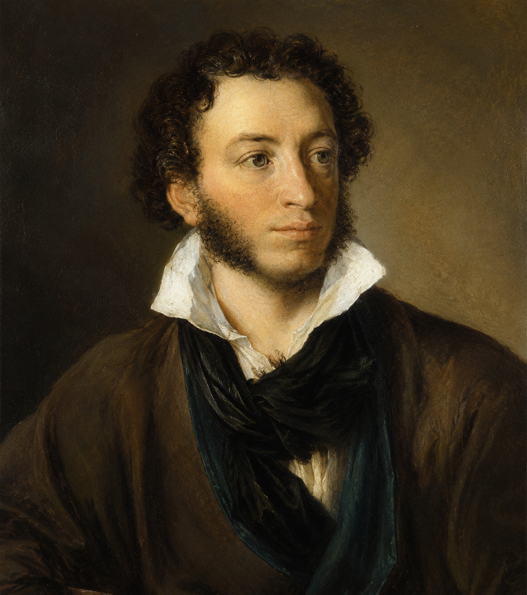

"Hãy hình dung những trở ngại tinh thần mà một người độc hành trên đường lạnh vắng có thể phải đối diện. Theo bạn, để vượt qua những trở ngại đó, người ta có thể làm gì?"
Vị trí & Đóng góp lịch sử:
Pu-skin là nhà thơ vĩ đại, được tôn vinh là "Mặt trời của thi ca Nga", người đặt nền móng cho văn học hiện thực Nga thế kỉ XIX. Ông được Đốt-xtôi-ép-xki đánh giá là người duy nhất nói tiếng nói "toàn nhân loại".
Phong cách nghệ thuật:
Di sản tác phẩm:
Để lại di sản đồ sộ ở nhiều thể loại, tiêu biểu với hơn 800 bài thơ trữ tình, các tiểu thuyết bằng thơ (Ơ-gen-ni Ô-nê-ghin), trường ca, kịch...

Hình 1: Chân dung Pu-skin (Tranh của O. Kip-ren-xki, 1827) (h1.png)Hoàn cảnh sáng tác: Sáng tác vào cuối năm 1826, sau thất bại của cuộc khởi nghĩa các nhà quý tộc tiến bộ (Tháng 12/1825) và trong thời gian nhà thơ bị chính quyền Nga hoàng lưu đày ở phương Bắc.
Cảm hứng chủ đạo: Sự hòa quyện giữa nỗi buồn riêng nơi đày ải, nỗi buồn chung của nhân dân với ý chí, khát vọng vượt qua gian khó để tìm lại cảm giác ấm áp, bình yên.
Thể loại & Dịch giả: Thơ trữ tình (thể thơ 4 câu nhịp điệu đều đặn), bản dịch thơ nổi tiếng của dịch giả Thúy Toàn.
❓ Câu 1 (Trang 62): Lưu ý: Mỗi hình ảnh, âm thanh trong bài thơ vừa nhấn mạnh nỗi buồn, vừa thể hiện hoạt động không trở ngại.
Trả lời: Âm thanh "nhạc ngựa đều đều buồn tẻ", "tiếng lục lạc", hình ảnh "sương mù gợn sóng", "mảnh trăng mờ" thể hiện không gian quạnh hiu. Nhưng đồng thời, chiếc xe tam mã vẫn lao nhanh, kim đồng hồ vẫn quay, khẳng định sự vận động liên tục không ngừng nghỉ của con người trên hành trình vượt qua chướng ngại.
❓ Câu 2 (Trang 62): Giữa ngoại cảnh và những hình ảnh xuất hiện trong tâm tưởng có sự tương phản như thế nào?
Trả lời: Sự tương phản gay gắt giữa Ngoại cảnh thực tại (lạnh giá, tuyết trắng, rừng bao la, âm thanh đơn điệu, cô độc) và Tâm tưởng tương lai (mái ấm lò sưởi đỏ, gương mặt em yêu Nhi-na, sự gần gũi ấm áp không chia rẽ).
❓ Câu 3 (Trang 63): Lời than "Ôi buồn đau, ôi cô lẻ..." kết nối tâm tưởng nhân vật trữ tình với ai? Ở đâu?
Trả lời: Lời than ấy kết nối tâm hồn nhân vật trữ tình với người yêu (Nhi-na) ở chốn quê nhà ấm áp - nơi có lò sưởi đỏ và tình yêu thương đang chờ đón ông vào ngày mai.
❓ Câu 4 (Trang 63): Những hình tượng thơ đã xuất hiện trong bài được điểm lại như thế nào?
Trả lời: Ở khổ cuối, các hình tượng được tái hiện tổng hợp: "đường xa vắng", "bác xà ích lặng im", "nhạc ngựa buông xa thẳm", "sương mờ che lấp ánh trăng nghiêng" $\rightarrow$ Khép lại bài thơ bằng một vòng cung kết nối giữa ngoại cảnh thực tại và tâm trạng ưu tư.
| Các khổ thơ | Hình ảnh & Âm thanh chủ đạo | Cấu Tứ & Vận Động Tâm Trạng |
|---|---|---|
| Khổ 1 - 3 | Sương mù, trăng mờ, đồng u buồn, nhạc ngựa đều đều, bài ca xà ích (mặt vui / mặt buồn). | Cấu tứ ngoại cảnh: Nỗi buồn dâng trào giữa thiên nhiên Nga tuyết trắng rộng lớn và mênh mông. |
| Khổ 4 | Không mái lều, không ánh lửa, tuyết trắng, rừng bao la, cột sọc chỉ đường sừng sững. | Cấu tứ chuyển biến: Đỉnh điểm cô độc nhưng cột mốc chỉ đường khẳng định sự tiến lên liên tục. |
| Khổ 5 - 6 | Hình bóng Nhi-na, lò lửa đỏ, kim đồng hồ tích tắc, đêm sum họp. | Cấu tứ tâm tưởng: Điểm tựa tinh thần vượt thoát thực tại; khát vọng tình yêu và sự bình yên. |
| Khổ 7 | Đường xa vắng, bác xà ích thiu thiu, nhạc ngựa buông xa, trăng nghiêng mờ sương. | Cấu tứ tổng hợp: Trở lại thực tại nhưng với tâm thế tĩnh lặng, kiên định hơn. |
Câu 1: Nhan đề bài thơ "Con đường mùa đông" gợi cho bạn những liên tưởng gì?
- Nghĩa thực: Con đường tuyết bao phủ rợn ngợp của thiên nhiên nước Nga vào mùa đông giá lạnh mà nhà thơ đang vượt qua trên chiếc xe tam mã.
- Nghĩa biểu tượng: Tượng trưng cho chặng đường đời đầy trắc trở, đày ải, cô đơn của chính tác giả cũng như vận mệnh gian bân của đất nước Nga trong thời kì chuyên chế.
Câu 2: Mâu thuẫn giữa nỗi buồn với ý thức vận động vượt qua trở ngại qua các hình ảnh và âm thanh?
- Hình ảnh & âm thanh buồn: "Trăng mờ ảo", "tiếng nhạc ngựa đều đều buồn tẻ", "rừng bao la", "sương mờ". Chúng gợi sự cô đơn, tĩnh lặng.
- Ý thức vận động: Xe vẫn lao nhanh, "cột cây số sừng sững", "kim đồng hồ kêu tích tắc xoay đủ vòng". Vận động vật lý và sự trôi chảy của thời gian khẳng định con người không dừng lại mà đang chủ động tiến về đích.
Câu 3: Xác định những hình ảnh, hoạt động tương phản trong khổ 4 và sự thay đổi của nhân vật trữ tình?
- Hình ảnh tương phản: "Không một mái lều, ánh lửa" (sự vắng bóng sự sống) $\xrightleftharpoons$ "Tuyết trắng và rừng bao la" cùng "những cột dài cây số sừng sững chào ta".
- Sự thay đổi: Nhân vật trữ tình không hoàn toàn gục ngã trong u buồn mà tìm thấy sự đồng hành độc đáo từ những "cột cây số" - biểu tượng cho cột mốc đo đếm hành trình tiến gần về đích.
Câu 4: Không gian, thời gian tâm tưởng ở khổ 5 - 6 và những điều nhân vật trữ tình tận hưởng?
- Thời gian - không gian tâm tưởng: "Ngày mai", "bên lò lửa đỏ", trong căn phòng ấm áp bên người yêu Nhi-na.
- Trải nghiệm tâm tưởng: Được "ngắm em mãi không thôi", lắng nghe tiếng kim đồng hồ xoay nhịp nhàng, xua tan lũ người tẻ ngắt $\rightarrow$ Đây chính là liều thuốc tinh thần tiếp thêm sức mạnh để nhà thơ chịu đựng và vượt qua cái lạnh lùng thực tại.
Câu 5: Ý nghĩa các hình tượng "xe tam mã", "bài ca xà ích", "mái lều, ánh lửa", "Nhi-na"?
- Xe tam mã: Biểu tượng cho tâm hồn và sức sống mãnh liệt của đất nước Nga.
- Bài ca xà ích: Biểu hiện tâm hồn Nga (vừa vui tươi trẩy hội vừa đượm buồn tâm tình).
- Mái lều, ánh lửa, Nhi-na: Điểm tựa ước mơ về sự ấm áp, bình yên, tình yêu thương nhân bản.
Câu 6: Nhận xét về các hình tượng được điểm lại ở khổ cuối và suy nghĩ về việc lấy lại bình yên?
- Khổ cuối nhắc lại: "đường xa vắng", "bác xà ích lặng im", "nhạc ngựa", "trăng nghiêng". Nhịp thơ quay về với thực tại nhưng tâm hồn đã trở nên điềm tĩnh, ấm áp hơn nhờ điểm tựa tâm tưởng.
- Bài học cuộc sống: Muốn lấy lại cảm giác bình yên trên "con đường mùa đông" của cuộc đời, con người cần có niềm tin, hướng về tình yêu thương, gia đình và những mục đích cao đẹp ở tương lai.
Câu 7: Nhận xét về cấu tứ bài thơ và liên hệ bài thơ khác?
- Cấu tứ: Cấu tứ dịch chuyển từ thực tại lạnh giá $\rightarrow$ tâm tưởng ấm áp $\rightarrow$ trở lại thực tại với niềm tin. Đó là cấu tứ vận động hóa giải nỗi buồn.
- Liên hệ: Có cấu tứ tương đồng với bài thơ "Nhớ đồng" (Tố Hữu) - từ thực tại tù đày cô đơn $\rightarrow$ nhớ về cảnh đồng quê và lý tưởng $\rightarrow$ tiếp thêm sức mạnh chiến đấu.
"Viết đoạn văn (khoảng 150 chữ) về một hình ảnh mang ý nghĩa tượng trưng mà bạn cho là đặc sắc nhất trong bài thơ Con đường mùa đông."
Đoạn văn tham khảo (Về hình ảnh "Tiếng nhạc ngựa đều đều"):
Trong bài thơ "Con đường mùa đông" của Pu-skin, hình ảnh âm thanh "tiếng nhạc ngựa đều đều" là một biểu tượng vô cùng đặc sắc. Âm thanh ấy vang lên giữa không gian tuyết trắng bao la, không chỉ đo đếm bước đi miên man của thời gian mà còn xoáy sâu vào nỗi cô đơn, tịch mịch của người độc hành trên đường đày ải. Điệu nhạc "khắc khắc hoài vọng" ấy tưởng chừng làm tăng thêm sự buồn tẻ, nhưng mặt khác, nó lại là nhịp đập bền bỉ của sự sống, khẳng định chiếc xe tam mã vẫn đang không ngừng lao về phía trước. Tiếng nhạc ngựa kết nối hiện thực lạnh giá với hành trình tâm tưởng hướng tới mái ấm lò sưởi đỏ và hình bóng người yêu Nhi-na. Qua đó, Pu-skin đã biến một âm thanh đời thường thành biểu tượng cho nghị lực vươn lên, hóa giải nỗi buồn để vươn tới cái đẹp và sự bình yên trong tâm hồn.
Hình ảnh "Xe tam mã" (Troika) kéo ba con ngựa chạy nước đại là một biểu tượng độc đáo của văn hóa truyền thống Nga. Khi xe chạy nhanh, người ngồi trên xe cảm thấy như bay lên, thể hiện tinh thần tự do và tâm hồn phóng khoáng của nhân dân Nga.
So sánh phương pháp miêu tả thiên nhiên và chuyển biến tâm trạng trong thơ Pu-skin với phong trào Thơ mới Việt Nam (1932 - 1945) để hiểu rõ hơn về tính chất lãng mạn phương Tây và lãng mạn Việt Nam.
Nỗi buồn trong thơ Pu-skin không bao giờ dẫn đến sự bi lụy, bế tắc tuyệt vọng. Đó là "nỗi buồn trong sáng", chứa đựng sức mạnh tinh thần to lớn giúp con người vượt qua mọi nghịch cảnh thời đại.
10 câu hỏi trắc nghiệm củng cố kiến thức văn bản Pu-skin (Nhận biết, Thông hiểu, Vận dụng)
Bài 1: Phân tích sự chuyển biến tâm trạng của nhân vật trữ tình từ cảnh thực (khổ 1-4) sang không gian tâm tưởng (khổ 5-6) và trở lại thực tại (khổ 7).
Lời giải chi tiết:
- Giai đoạn 1 (Khổ 1-4): Tâm trạng ngập tràn sự u buồn, cô đơn rợn ngợp giữa thiên nhiên mùa đông lạnh giá của nước Nga. Những hình ảnh như trăng mờ, rừng bao la và nhạc ngựa đơn điệu đè nặng lên cảm xúc.
- Giai đoạn 2 (Khổ 5-6): Tâm trạng bừng sáng nhờ sức mạnh của hoài niệm và khát vọng. Nhân vật trữ tình vượt thoát thực tại để hướng về mái ấm lò sưởi đỏ và hình bóng em yêu Nhi-na.
- Giai đoạn 3 (Khổ 7): Quay trở lại thực tại "đường xa vắng", nhưng giờ đây tâm hồn không còn tuyệt vọng mà đã lấy lại được sự bình tĩnh, tĩnh lặng và kiên định.
Bài 2: Tính toán chỉ số tần suất xuất hiện của các từ ngữ chỉ sắc thái u buồn, cô đơn trong bài thơ (bản dịch) và nhận xét nhịp điệu cảm xúc.
Lời giải chi tiết:
- Thống kê từ ngữ chỉ u buồn & cô đơn: mờ ảo (1), buồn (2), vắng vẻ (1), buồn tẻ (1), khắc khắc hoài vọng/khắc khoải (1), đìu hiu (1), không một (1), buồn đau (1), cô lẻ (1), sầu (1).
- Tổng số từ chỉ sắc thái u buồn: khoảng 11 từ trên tổng số 112 từ của bài thơ dịch (chiếm tỉ lệ xấp xỉ \(9.8\%\)).
- Nhận xét: Mặc dù tần suất từ u buồn khá cao ở phần đầu, sự xuất hiện của các từ ngữ ấm áp ở khổ 5-6 ("lửa đỏ", "bên nhau") đã tạo nên sự cân bằng, hóa giải sắc thái cô đơn triệt để.
Bài 3: So sánh biểu tượng "con đường" trong "Con đường mùa đông" (Pu-skin) và "Tràng giang" (Huy Cận) để làm rõ sự khác biệt trong cấu tứ.
Lời giải chi tiết:
- Trong "Con đường mùa đông" (Pu-skin): Con đường vừa là thực tại đày ải, vừa là hành trình vận động tiến lên. Cấu tứ thơ là sự hóa giải nỗi buồn qua niềm tin và khát vọng yêu thương.
- Trong "Tràng giang" (Huy Cận): "Con đường" sông nước là không gian chia ly, bơ vơ không điểm tựa ("không cầu", "không đò"). Cấu tứ xoáy sâu vào sự tương phản giữa kiếp người nhỏ bé và vũ trụ vĩnh hằng.
- Kết luận: Pu-skin thể hiện tinh thần lãng mạn tích cực vươn lên vượt nghịch cảnh, còn Huy Cận thể hiện cái "tôi" lãng mạn Thơ mới ngập tràn nỗi sầu nhân thế trước thời cuộc.